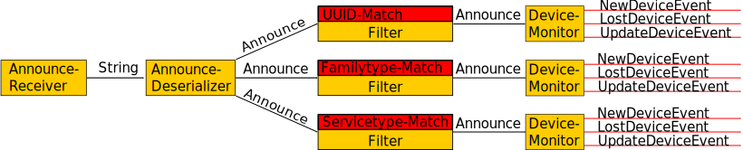

This document is the API specification for the HBM (Hottinger Baldwin Messtechnik GmbH) device scan.
The following picture shows the overall structure of processing device announce messages:

In general processing announce messages is a chain of several filters an transformers. Because the connection between all blocks is a Observer/Observable interface, you can attach an arbitrary amount of inputs to outputs.
The AnnounceReceiver receive announce multicast messages, the AnnounceDeserializer parses the JSON messages into Java objects. All Filter object are instantiated with a specific Matcher object, currently a family type matcher, a UUID matcher and service type matcher are implemented. The Filter object let pass only those Announce objects with respect to the Matcher. The DeviceMonitor monitors the expiration key in Announce messages and provides the concept of events if a new device was discovered, a device was lost (didn't sent announces during the expiration time) or if some information changed in the Announce (for instance the IP addresses or some services).
It should noted that the whole is completly event driven, no polling is involved.
Please be aware that the whole package is NOT thread safe, so users of this package must ensure thread safety on their own in a multi-threaded environment.